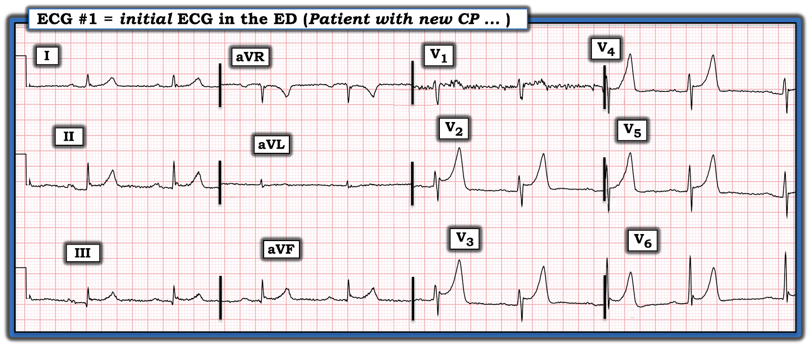
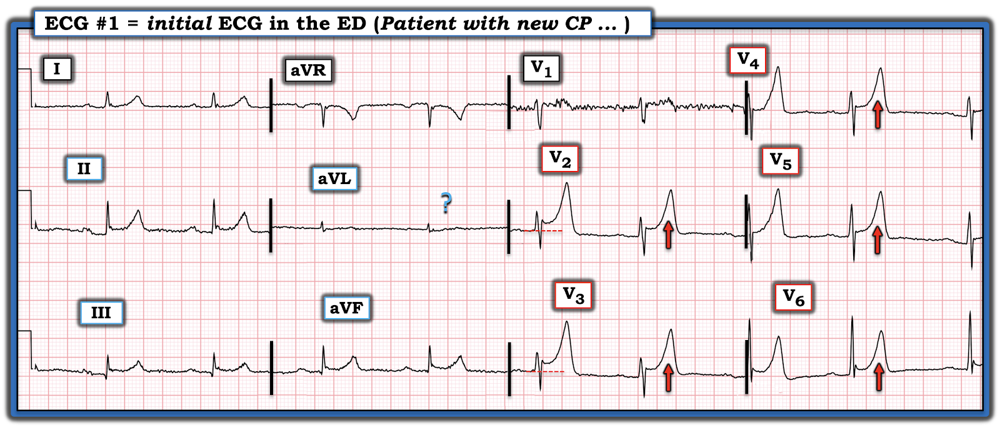
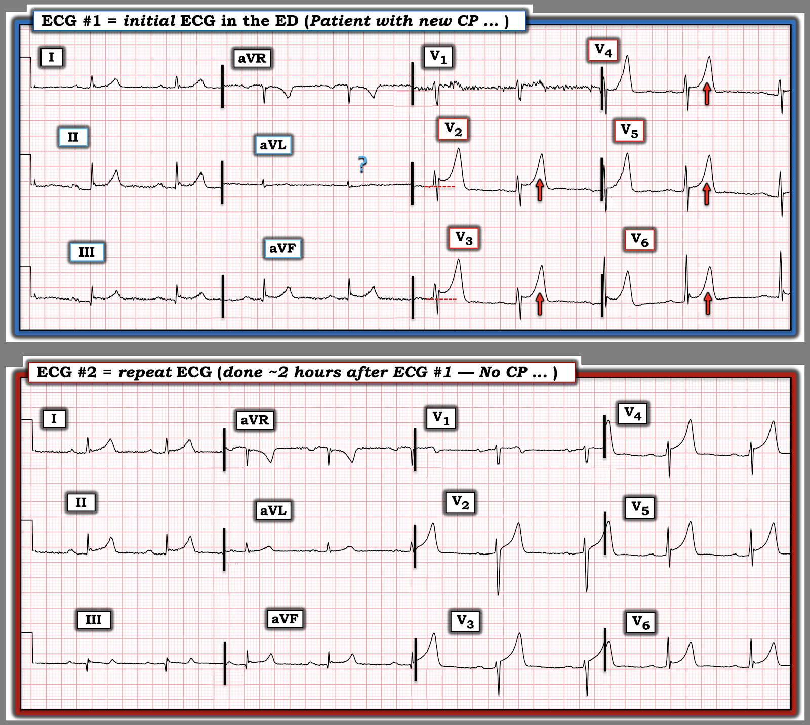

ECG Blog #508 — Sóng T cao, nhọn ...
Điện tâm đồ ở Hình 1 được ghi từ một người đàn ông trung niên đến khoa cấp cứu ED (Emergency Department) vì đau ngực dữ dội, mới khởi phát — CP (Chest Pain).
- HA = 130/90 mm Hg.
- hs-Troponin ban đầu bình thường.
CÂU HỎI:
- Bạn sẽ diễn giải điện tâm đồ này như thế nào?
- Bạn có nên kích hoạt phòng thông tim (cath lab) không?


SUY NGHĨ CỦA TÔI về Bệnh cảnh Lâm sàng:
Bệnh sử CP dữ dội, mới khởi phát ở người đàn ông trung niên này — đủ đáng lo để chính ông phải đến ED — lập tức xếp ông vào nhóm nguy cơ cao hơn có một biến cố tim cấp.
- ĐIỂM THEN CHỐT (PEARL) #1: Xin nhấn mạnh rằng dù ta có thể tạm yên tâm trong chốc lát với giá trị hs-Troponin ban đầu bình thường — điều này hoàn toàn không loại trừ một biến cố tim cấp. Wereski và cs. (JAMA Cardiology, 2020) — nhận thấy 14% bệnh nhân STEMI cấp có hs-Troponin ban đầu bình thường (và ~25% có nồng độ hs-Troponin dưới ngưỡng “khẳng định” (rule-in) nhồi máu).
- Đôi khi — ngay cả lần đo hs-Troponin thứ 2 vẫn có thể bình thường ở một bệnh nhân rồi sau đó tiến triển thành STEMI cấp. Lý do rất đơn giản: i) Giá trị Troponin (kể cả giá trị hs-Troponin) chỉ là một “gương chiếu hậu” cho biết những gì đã xảy ra — chứ không cho biết điều gì sẽ xảy ra trong tương lai; — và, ii) hs-Troponin có tăng hay không không chỉ phụ thuộc vào kích thước ổ nhồi máu — mà đặc biệt phụ thuộc vào thời gian mạch “thủ phạm” bị tắc — nghĩa là nếu khoảng thời gian mạch “thủ phạm” bị đóng là ngắn (do tái tưới máu tự phát nhanh) — thì hs-Troponin có thể chỉ tăng tối thiểu (nếu có tăng).
SUY NGHĨ CỦA TÔI về Điện tâm đồ Ban đầu ở Hình 1:
Nhịp là loạn nhịp xoang — tần số ngay dưới 60/phút. Khoảng PR kéo dài ( = blốc AV độ 1) — nhưng thời gian QRS và khoảng QTc bình thường. Trục mặt phẳng trán bình thường, ở +50 độ. Không có lớn buồng tim.
- Có nhiễu đáng kể ở chuyển đạo V1. Dù vậy — nhiễu đường nền ở các chuyển đạo chi là tối thiểu, và không cản trở việc diễn giải.
- “Mắt” tôi lập tức bị hút về các chuyển đạo ngực — bắt đầu từ chuyển đạo V2. Mỗi chuyển đạo trong 5 chuyển đạo ngực tiếp theo đều có điểm J ST chênh lên rõ cùng với sóng T trông như tối cấp (hyperacute), cao, và nhọn (các mũi tên ĐỎ ở chuyển đạo V2 đến V6 — như trong Hình 2).
- ĐIỂM THEN CHỐT (PEARL) #2: Khác với sóng T nhọn có thể gặp trong các biến thể tái cực — sóng T ở Hình 2 nhọn hơn, cao hơn và cân xứng hơn (tức là, các biến thể tái cực thường kém cân xứng hơn, với sườn lên chậm hơn so với sườn xuống nhanh hơn).
- Lưu ý: Khía điểm J rõ có thấy ở chuyển đạo V6. Dù có dấu hiệu này (vốn thường gặp trong các biến thể tái cực) — hình dạng tối cấp của sóng T như đã mô tả ở trên, ở bệnh nhân đau ngực dữ dội mới khởi phát này, rõ ràng là đáng lo ngại.
- T.B. (P.S.): Dù nên kiểm tra để chắc chắn K+ huyết thanh bình thường (và đúng là bình thường) — sóng T nhọn của tăng kali máu thường có đáy còn hẹp hơn so với ở Hình 2.


Về các chuyển đạo chi ở Hình 2:
- Đoạn ST chênh lên và sóng T nhọn ở các chuyển đạo I,II,III và aVF (dù không nhiều bằng ở các chuyển đạo ngực).
- Tôi không chắc phức bộ QRS rất nhỏ, đầy nhiễu ở chuyển đạo aVL có ST chênh xuống hay không (vì thế có dấu hỏi XANH của tôi ở chuyển đạo này).
- ĐIỀU CỐT LÕI: Ở người đàn ông trung niên đến viện vì đau ngực dữ dội, mới khởi phát này — ST chênh lên thấy ở 9 (nếu không muốn nói là 10) trong 12 chuyển đạo, cùng với sóng T tối cấp cho đến khi chứng minh được điều ngược lại ở 5 chuyển đạo ngực liên tiếp.
==========================
Ca bệnh Tiếp diễn:
Dựa trên biểu hiện lâm sàng nêu trên và các dấu hiệu trên điện tâm đồ ban đầu — phòng thông tim đã được kích hoạt. Kết quả thông tim:
- Thân chung động mạch vành trái (LMain): Bình thường.
- LAD: Xơ vữa mức độ nhẹ đến vừa ở đoạn giữa LAD kèm co thắt mạch vành nặng gây tắc hoàn toàn (dòng chảy TIMI-0). Đạt được dòng chảy bình thường (TIMI-3) sau khi bơm NTG trong mạch vành.
- LCx: Xơ vữa không quá mức tối thiểu.
- RCA: Xơ vữa không quá mức tối thiểu.
- Nhận định: Xơ vữa mạch vành không đáng kể. Co thắt mạch vành cấp ban đầu gây tắc LAD hoàn toàn — nhưng dòng chảy bình thường đã được khôi phục nhờ NTG trong mạch vành. Chức năng thất trái bình thường sau IC-NTG. Khuyến nghị điều trị nội khoa.
================
LƯU Ý: Dù giá trị hs-Troponin-I ban đầu bình thường — các giá trị Troponin lần thứ 2 và thứ 3 đã tăng rất cao! ==> Bệnh nhân hôm nay bị nhồi máu cơ tim do co thắt mạch vành khởi phát.
- Ở thời điểm 6 giờ sau khởi phát triệu chứng — hs-Troponin I là 6.24 ng/mL (bất thường khi ≥0.0875; giá trị tham chiếu ≤0.0175).
- Ở thời điểm 12 giờ sau khởi phát triệu chứng — hs-Troponin I = 66.16 ng/mL.
==========================
SUY NGHĨ CỦA TÔI về CA BỆNH này:
Đáng tiếc là không có điện tâm đồ nào được ghi sau khi tình trạng tắc hoàn toàn LAD được giải trừ bằng NTG trong mạch vành. Vì vậy, chúng ta không có điện tâm đồ nền lúc bệnh nhân này hết đau.
- Xem lại hồ sơ bệnh án của bệnh nhân không thấy điện tâm đồ nào trước đây.
- Một điện tâm đồ ghi lại được thực hiện sau thông tim, khi bệnh nhân vẫn hết đau — nhưng lúc đó đã gần 2 giờ sau (trình bày ở Hình 3).
CÂU HỎI:
- Có bất kỳ thay đổi nào ở điện tâm đồ #2 so với điện tâm đồ #1 không?
- GỢI Ý: Nếu câu trả lời của bạn là không có khác biệt gì giữa 2 bản ghi ở Hình 3 — hãy QUAY LẠI và NHÌN lại lần nữa ...


TRẢ LỜI:
ST chênh lên kèm sóng T nhọn vẫn tồn tại ở nhiều chuyển đạo trên điện tâm đồ #2. Dù vậy — có sự cải thiện kín đáo-nhưng-có-thật về hình dạng sóng T ở các chuyển đạo ngực.
- Sóng T ở các chuyển đạo ngực trông ít tối cấp hơn trên điện tâm đồ ghi lại — ở chỗ các sóng T này giờ đây kém cân xứng hơn so với trên điện tâm đồ #1 (tức là, sườn lên của sóng T ở các chuyển đạo V2 đến V6 giờ đây chậm hơn sườn xuống).
- Khía điểm J kín đáo thấy ở các chuyển đạo V5,V6 — cũng như ở một số chuyển đạo chi.
- Suy nghĩ của tôi: Chúng ta vẫn chưa biết điện tâm đồ nền của bệnh nhân này trông như thế nào. Dù điện tâm đồ #2 giờ đây biểu hiện các đặc điểm của một biến thể tái cực — tôi đã kỳ vọng điện tâm đồ của bệnh nhân sẽ trở về bình thường nhiều hơn vào thời điểm này, 2 giờ sau khi NTG trong mạch vành đã làm hết hoàn toàn cơn đau ngực của bệnh nhân. Tôi muốn ghi lại điện tâm đồ sau khi bệnh nhân hết đau ít nhất một ngày.
==========================
KẾT LUẬN CA BỆNH:
Ca hôm nay là một ví dụ sâu sắc về một bệnh nhân có bệnh mạch vành không gây tắc nghẽn, mức độ hạn chế — biểu hiện bằng co thắt mạch vành cấp đủ nặng để làm tắc hoàn toàn đoạn giữa LAD cho đến khi được dùng NTG trong mạch vành.
- Kết quả là nhồi máu do co thắt, với Troponin tăng rõ rệt.
==========================
Về VSA (đau thắt ngực do co thắt mạch — VasoSpastic Angina) = Co thắt mạch vành:
Thực thể "VSA" — đã được biết đến hơn 50 năm nay. Khác với đau thắt ngực Prinzmetal (hay đau thắt ngực biến thái) xảy ra lúc nghỉ — ngày càng rõ rằng các biến thể của chủ đề "co thắt" mạch vành cũng xảy ra với tần suất đáng ngạc nhiên trong đau thắt ngực do gắng sức, đau thắt ngực không ổn định, nhồi máu cấp, và trong các rối loạn nhịp thất ác tính có thể gây đột tử.
Tôi thấy các bài báo của Teragawa và cs. ( World J Cardiol 10(11):201-209, 2018) — của Tandon và cs. (Cureus 11(2):e4134, 2019) — của Slavich và Patel (IJC Heart & Vasc 10:47-53, 2016) — và của Ziccardi và Hatcher (StatPearls, 2023) rất hữu ích khi tôi tìm hiểu chủ đề này.
- Co thắt mạch vành được định nghĩa — là tình trạng hẹp thoáng qua một hoặc nhiều động mạch vành thượng tâm mạc, dẫn đến thiếu máu cục bộ cơ tim.
- Nhiều cơ chế có thể có đã được cho là gây co thắt mạch vành, bao gồm — rối loạn chức năng nội mô; cơ trơn mạch máu tăng phản ứng — thiếu magnesi; rối loạn chức năng hệ thần kinh tự chủ — và/hoặc do sự kết hợp nào đó của các yếu tố trên.
- Chẩn đoán VSA ở bệnh nhân hôm nay được xác lập bằng thông tim. Ở bệnh nhân này, người được phát hiện có xơ vữa không gây tắc nghẽn với mức độ hạn chế — ban đầu thấy tắc hoàn toàn đoạn giữa LAD trên thông tim. Dùng NTG IC (trong mạch vành — IntraCoronary) đã khôi phục dòng chảy bình thường — qua đó khẳng định chẩn đoán co thắt mạch vành.
- Ở các trường hợp khác, cần SPT (nghiệm pháp kích thích co thắt — Spasm Provocation Testing) để chẩn đoán VSA (tức là, dùng Ergonovine hoặc Acetylcholine trong lúc thông tim nhằm cố gắng gây co thắt mạch vành — sau đó chẩn đoán co thắt được khẳng định khi dòng chảy mạch vành được khôi phục bằng IC-NTG).
- Các phương tiện khác có thể giúp chẩn đoán VSA gồm ETT (nghiệm pháp gắng sức trên thảm lăn — Exercise Treadmill Testing) ở bệnh nhân co thắt do gắng sức — và/hoặc theo dõi Holter (cho bệnh nhân VSA xảy ra về đêm hoặc sáng sớm).
- Dù nhiều (phần lớn) bệnh nhân VSA có ít nhất một mức độ xơ vữa nền nào đó — một tỷ lệ nhất định bệnh nhân VSA thì không (đôi khi cho thấy động mạch vành "bình thường" trên thông tim). Vì vậy, cơ chế mà co thắt mạch vành có thể gây ra triệu chứng và/hoặc biến cố có thể thay đổi, từ rối loạn chức năng vi mạch ở những mạch máu có vẻ bình thường — đến co thắt mạch vành tác động lên các mạch đã có mảng xơ vữa theo cách cuối cùng có thể thúc đẩy vỡ mảng xơ vữa (tức là, Xem ECG Blog #415 về MINOCA — nhóm bệnh nhân bị nhồi máu cơ tim cấp dù có "Động mạch vành Không tắc nghẽn" (Non-Obstructive Coronary Arteries)).
- ĐIỂM THEN CHỐT (PEARL) #3: Cần biết các yếu tố khởi phát có thể có của co thắt mạch vành. Chúng có thể gồm hút thuốc lá, cocaine, cần sa, rượu, amphetamine, một số thuốc điều trị đau nửa đầu, thuốc chủ vận alpha (tức là, clonidine; pseudoephedrine), tiếp xúc lạnh, căng thẳng tâm lý và thông tim trái (dây dẫn, nong bóng).
Điều trị VSA:
Bàn luận đầy đủ về VSA vượt quá phạm vi của bài ECG Blog này. Dù vậy — một số điểm về điều trị đáng được đề cập.
- Bỏ thuốc lá là điều tuyệt đối BẮT BUỘC! Đây là một ví dụ về tình trạng lâm sàng mà hút dù chỉ một điếu thuốc — cũng là đã thừa 1 điếu.
- Tránh các yếu tố khởi phát co thắt khác (tức là, = ĐIỂM THEN CHỐT #3 ở trên! ).
- NTG SL (ngậm dưới lưỡi — Sublingual) — là điều trị bước 1 cho một cơn VSA cấp.
- CCB (thuốc chẹn kênh canxi — Calcium Channel Blockers) — được khuyến cáo cho điều trị lâu dài. Nếu/khi cần — có thể phối hợp CCB với nitrat tác dụng kéo dài.
- Thuốc chẹn ß — tốt nhất nên tránh (vì chẹn ß có thể dẫn tới hoạt tính alpha-adrenergic không bị đối kháng, có khả năng làm co thắt nặng thêm). Nếu cần dùng thuốc chẹn ß cho các chỉ định tim mạch khác — thì việc chỉnh liều tăng dần là thiết yếu để tránh làm co thắt mạch vành nặng thêm.
- Cân nhắc bổ sung magnesi.
- Các vấn đề còn bỏ ngỏ: Dù đã có nhiều tiến bộ lớn trong việc nhận biết VSA trong nhiều bệnh cảnh khác nhau — vẫn còn một số vấn đề: i) Điều trị VSA kháng trị như thế nào? — và, ii) Xác định bệnh nhân VSA nào cần ICD (máy khử rung tim cấy được — Implantable Cardioverter-Defibrillator).
NHÌN LẠI Điện tâm đồ Hôm nay:
Dù thừa nhận hoàn toàn rằng tôi đã không nghĩ bệnh lý chính ở bệnh nhân hôm nay là do co thắt mạch vành — khi nhìn lại, điện tâm đồ ban đầu hoàn toàn phù hợp với chẩn đoán này!
- Như đã bàn ở trên — điện tâm đồ ban đầu (mà tôi đã trình bày lại bên dưới ở Hình 2) của ca hôm nay cho thấy ST chênh lên kèm sóng T cao, nhọn ở 5/6 chuyển đạo ngực (các mũi tên ĐỎ ở những chuyển đạo này). Dù bị nhiễu làm biến dạng — dường như có ST chênh lên ở chuyển đạo V1.
- ST chênh lên kèm sóng T nhọn cũng thấy ở 4 chuyển đạo chi. Như vậy có 10/12 chuyển đạo có ST chênh lên kèm sóng T nhọn.
- Không có dấu hiệu rõ ràng của ST chênh xuống soi gương.
- Khác với OMI cấp, trong đó các dấu hiệu ST-T thường khu trú ở vùng tim bị thiếu máu cục bộ — ST chênh lên lan tỏa kèm sóng T tối cấp khi không có thay đổi ST-T soi gương hoàn toàn phù hợp với co thắt mạch vành!
- ĐIỂM THEN CHỐT (PEARL) #4: Dù điện tâm đồ hôm nay với ST chênh lên lan tỏa mà không có ST chênh xuống soi gương là điển hình cho co thắt mạch vành đơn thuần — VSA không phải lúc nào cũng kèm ST chênh lên. SPT (nghiệm pháp kích thích co thắt) có thể cần thiết để chẩn đoán trên thông tim ở một số trường hợp.
==================================
Lời cảm ơn: Xin cảm ơn Chun-Hung Chen = 陳俊宏 (Thành phố Đài Trung, Đài Loan) đã cung cấp ca bệnh và bản ghi này.
==================================